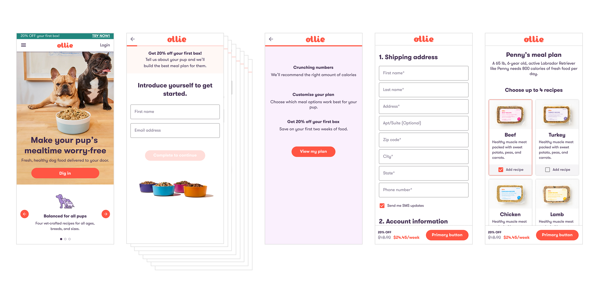
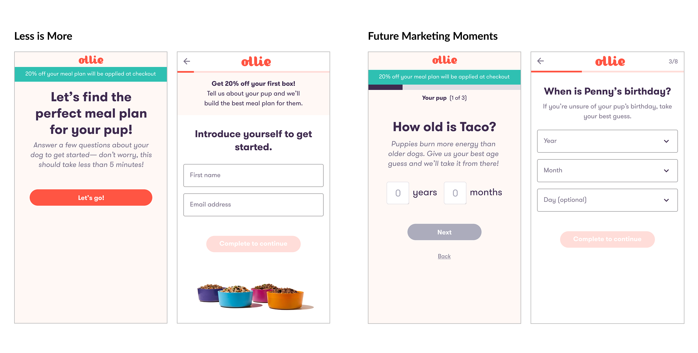
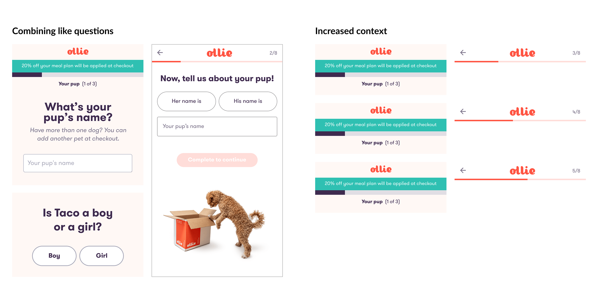
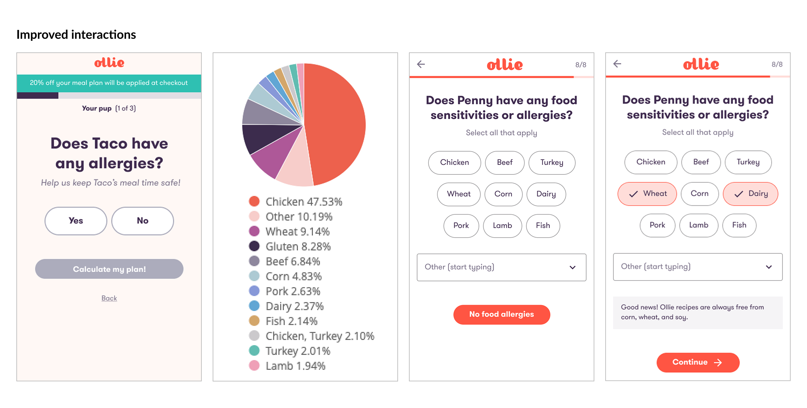
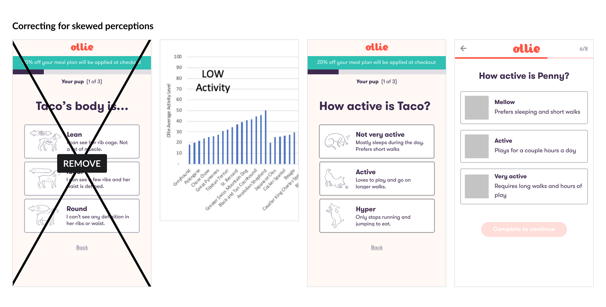
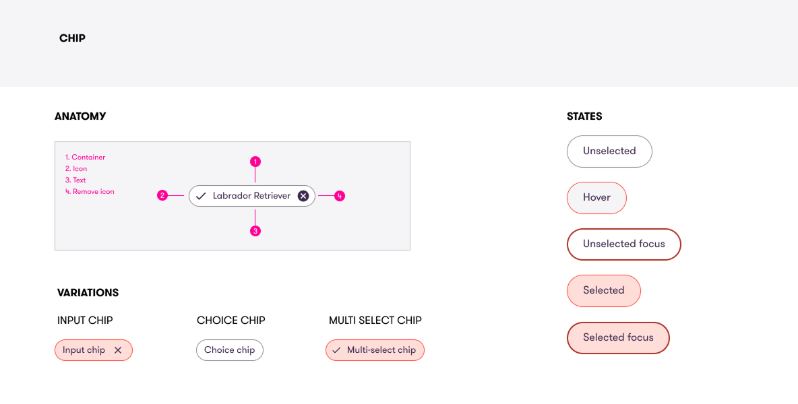
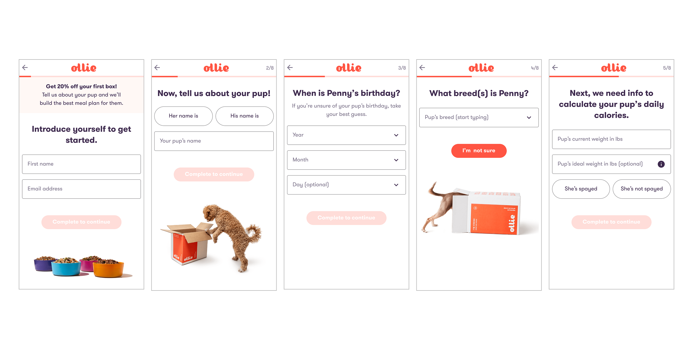
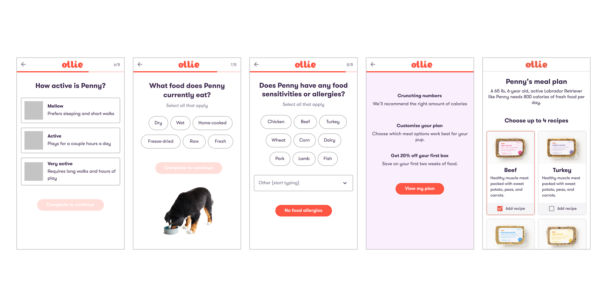
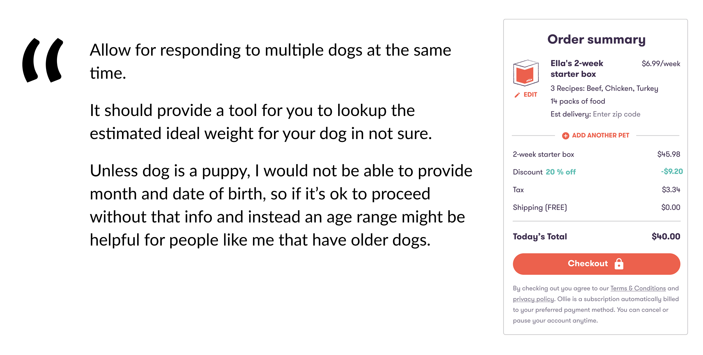

Ollie Onboarding
Increasing acquisition funnel conversion by 10% while supporting a FE and BE replatform









My role
- Led evaluative user research to uncover pain points with the current funnel and to validate the new proposed experience.
- Consulted with Strategy to define conversion metrics and high-impact opportunity areas to improve within the funnel.
- I spearheaded the creation of Ollie's first design system components to ensure the new funnel was both high-performing and scalable.
- Infused Ollie's brand refresh into the acquisition funnel through updated copy and images.
The team
- Myself as Senior Product Designer
- Product Manager
- 4 FE Engineers
- Brand Designer
- Content Designer
- Consulted with Strategy and CX
The situation
Ollie, a D2C subscription dog food company, had a plan to tackle FE and BE tech debt beginning at the acquisition funnel. Having already lifted homepage engagement in an earlier project, I followed the data downstream to the next-biggest opportunity: a three-week window to refresh the onboarding quiz. Once visitors started the onboarding quiz, the largest area for drop off was within the first three questions. Only 47% of users who initiated onboarding made it to step 4 of the onboarding quiz, but after step 4 drop off was only 1-2% at each step — overall, just 57.5% of users who started onboarding made it through to plan selection. My goal was not only to support the replatform, but increase conversion as well.
The results
- After a week of going live conversion from onboarding to the next step (meal plan selection) increased by 10%.
- Reduced onboarding flow from 12 steps to 8 steps, getting visitors through the funnel faster, without losing any critical information.
- The perceived amount of questions asked reduced from 8.3 to 7.6 questions.
- 9 new common components were added to Ollie's first ever design system including a primary button, chip, input, select, progress indicator, and banner.
Key decisions & trade-offs
- Invest in usability testing tool: In the couple weeks prior to this initiative, I had advocated and gotten buy-in from leadership for a usability testing software. I was able to use this project to showcase how valuable user research is to uncover pain points and be confident in our decisions.
- Create a design system: The FE manager was an amazing partner and advocate of the design system. I suggested a list of 9 components based off of the experience created for the onboarding funnel.
- Switch from age to birthday: I proposed shifting from asking for a dog's age to birth date and presented the idea to the Marketing Director who loved the idea of this future, personalized marketing moment. We knew from research that many pet parents do not keep track or know their dog's birthday so there was a risk we might introduce more difficulty to move past this step. We decided to take the risk and I tried to make it as easy as possible to enter the birth date by not requiring the specific day.